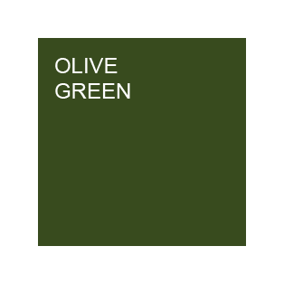
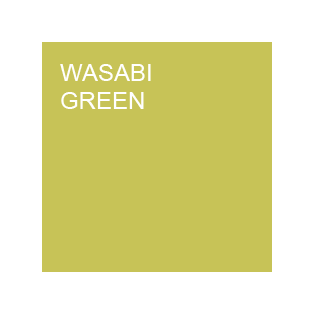
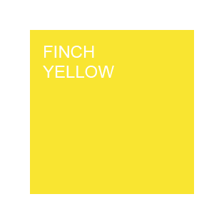
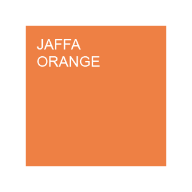
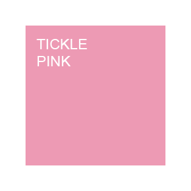
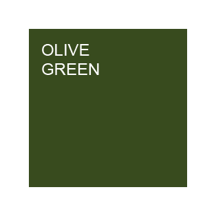
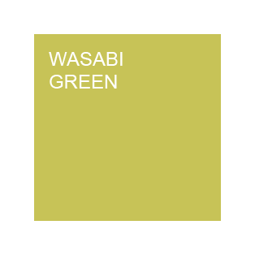
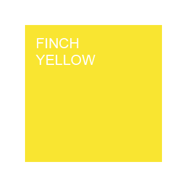
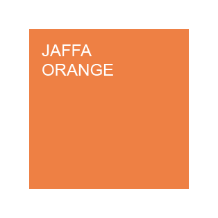
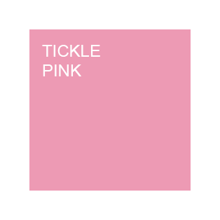

Timbers
We use a range of timbers that are known for their strong properties in the furniture industry: American Oak, American Ash and Fijian Rimu. We ensure that the valuable natural resource of timber is sourced from sustainably harvested plantations that carry the FSC mark.
Sustainability doesn’t start and end with simply sourcing environmentally sound timber, it involves buying well, from local suppliers and ensuring that things are built to last. IRFD deals entirely with local businesses to keep the process locally orientated. We also work directly with you, the end user, to make sure you receive something that will last you for many years to come which adds to the ethos of sustainability.
If you have a specific timber you would like to have as part of your design, please get in touch and we will be happy to discuss.
Colours
 









All of our designs can be fully customised by choosing from any of the above colours on all our metal components including bars, braces, sliders, screws, etc.
They are professionally powder coated by a local business near to our workshop.
Mix and match the colours with our selection of timbers to make the design your own.
If you have a custom colour outside our stock range, please contact to discuss.